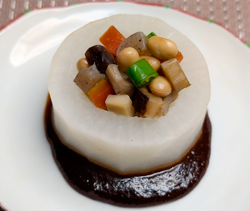

大根と五目豆のみそだれ
- 調理時間：60分
- （一人当たり）
- カロリー：283kcal
- たんぱく質：12.5g
- 脂質：5.4g
- 炭水化物：45.5g
- 塩分：2.8g


＜2人分＞※練りみそは作りやすい分量です。
- ・大根
- 8cm位(300g)
- ・出し昆布
- 3cm
- ・うすくち醤油
- 小さじ1
- ・赤みそ
- 100g
- ・砂糖
- 80g
- ・料理酒
- 大さじ1
- ・だし汁
- 40ml
A
B
- ・大豆の水煮
- 100g
- ・ニンジン
- 50g
- ・コンニャク
- 50g
- ・しいたけ
- 2枚
- ・レンコン
- 50g
- ・インゲン
- 2本
- ・だし汁
- 150～200ml
- ・醤油
- 大さじ1
- ・料理酒
- 大さじ1
- ・みりん
- 大さじ1
- ・砂糖
- 小さじ2
C


- A【大根を煮る】
大根は4㎝厚さの輪切りにし、皮をむいて面取りする。
片面に十文字の切り目を入れる。 - 鍋に大根とひたひたの水、出し昆布を入れ、中火にかける。
沸いたらアクをとって弱火にする。
竹串がスッと通るまで煮る。
うすくち醤油を加え、さらに10分ほど煮て火を止める。 - B【練りみそをつくる】
Bのすべての材料を鍋に入れる。
弱火でかき混ぜながら煮詰める。
鍋の底が見えるくらいまでとろみがついたら火を止める。（冷めると固くなるのでゆるめにつくる） - C【五目豆をつくる】
ニンジン、レンコンは皮をむいて、1㎝角に切る。
しいたけは軸を切り、1㎝角に切る。
コンニャクは下茹でして、1㎝角に切る。
インゲンはサッと湯がき、1㎝長さに切る。 - 鍋に大豆の水煮、ニンジン、レンコン、コンニャク、しいたけ、だし汁をいれて、弱火で加熱する。
- 醤油、料理酒、みりん、砂糖を加えて、ひと煮立ちしたら落し蓋をして、汁けがなくなるまで加熱する。
仕上げにインゲンを加え、全体を混ぜ合わせる。 - 【仕上げる】
大根は中をくり抜き、五目豆を盛り付ける。
お皿に練りみそを丸く敷き、先の大根をのせて完成。
大根と五目豆のみそだれ
節分は雑節のひとつです。雑節とは、五節句のように中国大陸から伝わったものでなく、日本人の生活や農作業に密着して生まれた暦日をいいます。
節分は、大寒から数えて１５日目。文字通り、季節の分かれ目を意味し、その変わり目には邪気が生じると考えられていたため、豆まきをして鬼を追い出し、邪気を祓う風習が今日まで受け継がれてきました。春立つ立春に魔目（豆）を炊いてみてはいかがでしょう。